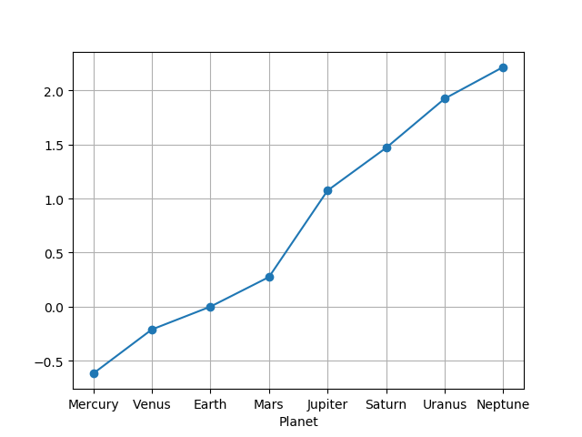
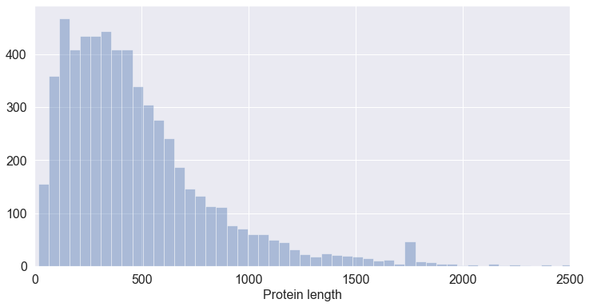
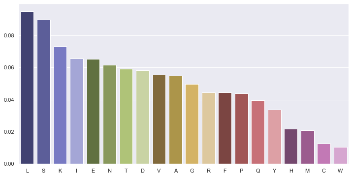
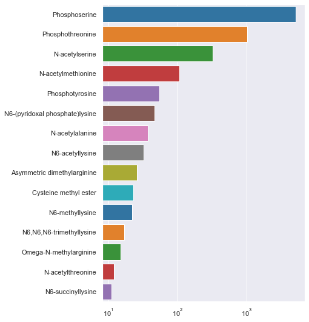

pandas¶

O módulo pandas é um dos mais populares módulos da linguagem Python para
o tratamento de dados que não sejam de natureza exclusivamente numérica (como acontece com o módulo numpy).
É também considerado também um dos módulos principais do chamado "ecossistema" de módulos científicos que, não estando disponíveis na distribuição base da linguagem Python, são geralmente incluídos nas distribuições mais "científicas" da linguagem, por exemplo a distribuição Anaconda.
Tal como o módulo numpy introduz um tipo novo de objetos, os arrays com propriedades que as listas não têm (operações vetoriais e muitas funções associadas), o módulo pandas define outros dois tipos principais de objetos com novas propriedades (embora sejam grandes as semelhanças com os arrays do numpy):
- as Series
- as DataFrames
A documentação do módulo apresenta as seguintes definições:
Seriesis a one-dimensional labeled array capable of holding any data type (integers, strings, floating point numbers, Python objects, etc.). The axis labels are collectively referred to as the index.
DataFrameis a 2-dimensional labeled data structure with columns of potentially different types. You can think of it like a spreadsheet or SQL table, or a dict of Series objects. It is generally the most commonly used pandas object.
Além das dimensões (uma Series é unidimensional e uma DataFrame é bidimensional, isto é, na forma de uma tabela), o que é de sublinhar nestes dois tipos novos de objetos é o facto dos dados serem acompanhados de labels (etiquetas)
Estes labels servem vários propósitos. Podendo ser basicamente entendidos como dados adicionais, eles são muito importantes na indexação da informação, tendo um papel análogo à chaves dos dicionários, mas com outras funcionalidades muito interessantes.
Estes conjuntos de labels constituem um índice.
Uma Series tem um único índice, chamado index.
Uma DataFrame, tem dois índices, um para as linhas, chamado index e outro para as colunas, chamado columns.
Comecemos pelas Series
Series¶
Construção e indexação¶
O módulo pandas tem de ser importado.
A convenção é importar comm a seguinte "abreviatura":
import pandas as pd
Uma Série (Series) é um conjunto (ordenado) de valores, mas cada valor é associado a um label.
Ao conjunto dos labels é o index da Series
Uma Series pode ser construída, por exemplo, a partir de uma lista, usando a função pd.Series():
ndias = [31, 28, 31, 30, 31, 30, 31, 31, 30, 31, 30, 31] meses = pd.Series(ndias) print(meses)
0 31 1 28 2 31 3 30 4 31 5 30 6 31 7 31 8 30 9 31 10 30 11 31 dtype: int64
Os números de 0 a 11 são o index da Series.
Se não indicarmos um índice, o conjunto dos inteiros sucessivos será o índice.
Mas quando construímos uma Série, usando a função pd.Series(), podemos indicar o índice, explicitamente:
ndias = [31, 28, 31, 30, 31, 30, 31, 31, 30, 31, 30, 31] ind = 'Jan Fev Mar Abr Mai Jun Jul Ago Set Out Nov Dez'.split() meses = pd.Series(ndias, index=ind) print(meses)
Jan 31 Fev 28 Mar 31 Abr 30 Mai 31 Jun 30 Jul 31 Ago 31 Set 30 Out 31 Nov 30 Dez 31 dtype: int64
Uma das principais razões de utilizarmos uma Series é que podemos indexar de diferentes maneiras:
- usando um label para obter um elemento (como um dicionário)
- usando slices de posições
- usando listas de labels
# ... # usando a Series meses criada acima... só_out = meses['Out'] trimestre1 = meses[:3] férias = meses[['Jul', 'Ago', 'Set']] print(só_out) print('--------------') print(trimestre1) print('--------------') print(férias)
31 -------------- Jan 31 Fev 28 Mar 31 dtype: int64 -------------- Jul 31 Ago 31 Set 30 dtype: int64
Ou ainda, tal como os arrays do numpy, usar condições lógicas para indexar (no fundo usando arrays booleanos):
# ... # usando a Series meses criada acima... m31 = meses[meses==31] print(m31)
Jan 31 Mar 31 Mai 31 Jul 31 Ago 31 Out 31 Dez 31 dtype: int64
Também existe a função Series.reindex() que transforma uma Series
noutra apenas com os elementos indicados e respeitando a ordem do "novo índice":
ndias = [31, 28, 31, 30, 31, 30, 31, 31, 30, 31, 30, 31] ind = 'Jan Fev Mar Abr Mai Jun Jul Ago Set Out Nov Dez'.split() meses = pd.Series(ndias, index=ind) alguns_meses = meses.reindex(['Dez', 'Set', 'Abr']) print(alguns_meses)
Dez 31 Set 30 Abr 30 dtype: int64
As Séries podem também ser construídas a partir de um dicionário,
usando pd.Series(). As chaves do dicionário passam a ser o index:
d = {'a' : 0, 'b' : 1, 'c' : 2} s = pd.Series(d) print(s)
a 0 b 1 c 2 dtype: int64
Valores em falta¶
Quando contruímos uma Series a partie de um dicionário podemos indicar explicitamente os valores do índice.
Mas, neste caso, se índice tiver elementos que nãoo estejam nas chaves do dicionário, haverá valores em falta (em inglês missing values).
d = {'a' : 0, 'b' : 1, 'c' : 2} s = pd.Series(d, index=['b', 'c', 'd', 'a']) print(s)
b 1.0 c 2.0 d NaN a 0.0 dtype: float64
O pandas uso o marcador NaN para indicar valores em falta.
Esta representação do conceito de valores em falta (que também existe no numpy) é muito útil: frequentemente lidamos com tabelas de dados em que não existem valores atribuídos em certas linhas e será conveniente assinalar esses valores.
Mais importante ainda, muitas funções de análise disponíveis no pandas levam em conta a existência de valores em falta que são pura e simplesmente ignorados. Por exemplo, o cálculo do desvio padrão de uma série ignora as entradas com valores em falta.
Usando a função Series.reindex() podem aparecer valores valores em falta:
ndias = [31, 28, 31, 30, 31, 30, 31, 31, 30, 31, 30, 31] ind = 'Jan Fev Mar Abr Mai Jun Jul Ago Set Out Nov Dez'.split() meses = pd.Series(ndias, index=ind) alguns_meses = meses.reindex(['Dez', 'Set', 'não vai dar', 'Abr']) print(alguns_meses)
Dez 31.0 Set 30.0 não vai dar NaN Abr 30.0 dtype: float64
Funções descritivas¶
As Séries têm muitas funções descritivas de grande utilidade.
Por exemplo, sum(), mean(), std() e var() calculam a soma, média, desvio padrão e variância dos valores da Series, respetivamente.
Note-se que, em geral, os valores em falta são ignorados nos cálculos.
d = {'a' : 0., 'b' : 1., 'c' : 2.} s = pd.Series(d, index=['b', 'c', 'd', 'a']) print(s) print('\nMédia =', s.mean())
b 1.0 c 2.0 d NaN a 0.0 dtype: float64 Média = 1.0
Series.value_counts() é outra função particularmente útil. O resultado é uma contagem dos valores diferentes da Series:
ndias = [31, 28, 31, 30, 31, 30, 31, 31, 30, 31, 30, 31] ind = 'Jan Fev Mar Abr Mai Jun Jul Ago Set Out Nov Dez'.split() meses = pd.Series(ndias, index=ind) cont_dias = meses.value_counts() print(cont_dias)
31 7 30 4 28 1 dtype: int64
Outra função interessante é a função Series.describe():
ndias = [31, 28, 31, 30, 31, 30, 31, 31, 30, 31, 30, 31] ind = 'Jan Fev Mar Abr Mai Jun Jul Ago Set Out Nov Dez'.split() meses = pd.Series(ndias, index=ind) stats = meses.describe() print(stats)
count 12.000000 mean 30.416667 std 0.900337 min 28.000000 25% 30.000000 50% 31.000000 75% 31.000000 max 31.000000 dtype: float64
Outra função útil é a Series.cumsum(), a soma acumulada ao longo da Series:
ndias = [31, 28, 31, 30, 31, 30, 31, 31, 30, 31, 30, 31] ind = 'Jan Fev Mar Abr Mai Jun Jul Ago Set Out Nov Dez'.split() meses = pd.Series(ndias, index=ind) totais = meses.cumsum() print(totais)
Jan 31 Fev 59 Mar 90 Abr 120 Mai 151 Jun 181 Jul 212 Ago 243 Set 273 Out 304 Nov 334 Dez 365 dtype: int64
Repare-se num pormenor interessante: o resultado destas 3 últimas funções é também uma Series.
Se quiser saber quantos dias do ano passaram no final de outubro podemos simplesmente indexar a soma acumulada com 'Out'
meses.cumsum()['Out']
Finalmente, tal como se fossem dicionários, a função len()e o operador in também funcionam com Series.
Operações vetoriais¶
As Séries comportam-se como arrays do módulo numpy: podemos executar operações vetoriais:
d = {'a' : 0.5, 'b' : 1.0, 'c' : 3.0, 'e': 1.8} s = pd.Series(d, index=['b', 'c', 'd', 'e', 'a']) print(s) print('-----------------') print(s**2)
b 1.0 c 3.0 d NaN e 1.8 a 0.5 dtype: float64 ----------------- b 1.00 c 9.00 d NaN e 3.24 a 0.25 dtype: float64
Neste exemplo, elevámos a Series ao quadrado.
O valor em falta foi ignorado.
Também muito poderoso é o facto de que, quando aplicamos operações vetoriais sobre Series (por exemplo, na soma de duas séries), os valores são alinhados pelos respetivos labels antes da operação.
Vejamos esta soma de duas séries:
s1 = pd.Series({'a' : 0.5, 'b' : 1.0, 'e': 1.8}) s2 = pd.Series({'a' : 0.5, 'b' : 1.0, 'f': 1.8}) print('Soma') print(s1 + s2)
Soma a 1.0 b 2.0 e NaN f NaN dtype: float64
A soma das duas Séries resulta numa Série em que todas os labels estão presentes (união de conjuntos).
As que só existirem numa das Séries ou as que, numa das Séries, têm o
valor NaN, terão o valor NaN no resultado final.
A função .dropna() permite eliminar os valores em falta.
s1 = pd.Series({'a' : 0.5, 'b' : 1.0, 'e': 1.8}) s2 = pd.Series({'a' : 0.5, 'b' : 1.0, 'f': 1.8}) s3 = s1 + s2 print(s3.dropna())
a 1.0 b 2.0 dtype: float64
DataFrames¶
Numa definição muito simplificada:
Uma DataFrame é um quadro bidimensional, em que cada coluna se comporta como uma Série, mas em que existe um índice comum a todas as colunas.
Há muitas formas diferentes de criar uma DataFrame:
- a partir de listas de dicionários
- a partir de dicionários de listas
- a partir de arrays
Mas para ilustrar as possibilidades de criação de DataFrames, o primeiro exemplo mostra a criação de uma DataFrame a partir de dados organizados em tabela num ficheiro de texto do tipo CSV:
import pandas as pd pdata = pd.read_csv('planetdata.txt', sep='\t') print(pdata)
Planet rotation_days revolution_years 0 Mercury 58.60 0.2408 1 Venus 243.00 0.6150 2 Earth 0.99 1.0000 3 Mars 1.03 1.8800 4 Jupiter 0.41 11.8600 5 Saturn 0.45 29.4600 6 Uranus 0.72 84.0100 7 Neptune 0.67 164.7900
Esta DataFrame tem 3 colunas, cada uma delas funciona como uma Series. Mas, todas as Series partilham o mesmo index, neste caso os números de 0 a 8.
Muitas vezes faz muito sentido que uma das colunas seja o index. Podemos passar uma coluna para funcionar como index com a função DataFrame.set_index():
pdata = pd.read_csv('planetdata.txt', sep='\t') pdata = pdata.set_index('Planet') print(pdata)
rotation_days revolution_years Planet Mercury 58.60 0.2408 Venus 243.00 0.6150 Earth 0.99 1.0000 Mars 1.03 1.8800 Jupiter 0.41 11.8600 Saturn 0.45 29.4600 Uranus 0.72 84.0100 Neptune 0.67 164.7900
Para obter uma das colunas, podemos indexar a DataFrame com o nome da coluna:
pdata = pd.read_csv('planetdata.txt', sep='\t') pdata = pdata.set_index('Planet') rot_days = pdata['rotation_days'] print(rot_days)
Planet Mercury 58.60 Venus 243.00 Earth 0.99 Mars 1.03 Jupiter 0.41 Saturn 0.45 Uranus 0.72 Neptune 0.67 Name: rotation_days, dtype: float64
ou, se o nome da coluna não tiver espaços, podemos simplesmente
usar o nome na forma .nome:
pdata = pd.read_csv('planetdata.txt', sep='\t') pdata = pdata.set_index('Planet') rot_days = pdata.rotation_days print(rot_days)
Planet Mercury 58.60 Venus 243.00 Earth 0.99 Mars 1.03 Jupiter 0.41 Saturn 0.45 Uranus 0.72 Neptune 0.67 Name: rotation_days, dtype: float64
Sendo as colunas Series, podemos usar toda a funcionalidade das Series:
import pandas as pd import numpy as np from matplotlib import pyplot as plt pdata = pd.read_csv('planetdata.txt', sep='\t').set_index('Planet') print('Rotation:') rot_days = pdata.rotation_days print(rot_days.describe()) logrev = np.log10(pdata.revolution_years) logrev.plot(marker='o', grid=True) plt.show()
Rotation: count 8.000000 mean 38.233750 std 85.181975 min 0.410000 25% 0.615000 50% 0.855000 75% 15.422500 max 243.000000 Name: rotation_days, dtype: float64

Interessante que o log do período de revolução seja quase linear.
Podemos fazer indexação por condições de toda a DataFrame
Em que planetas o dia é maior do que um dia na Terra?
pdata = pd.read_csv('planetdata.txt', sep='\t').set_index('Planet') rot_days = pdata.rotation_days longer_than1 = rot_days[rot_days > 1] print(longer_than1)
Planet Mercury 58.60 Venus 243.00 Mars 1.03 Name: rotation_days, dtype: float64
Exemplo: Tabela com informação Uniprot txt¶
Para ilustar o uso de uma DataFrame na organização e análise de dados, vamos ler a informação da UniProt sobre a levedura S. cerevisiae e realizar algumas análises sobre os comprimentos das proteínas, a abundância de aminoácidos e a contagem de modificações pós-traducionais.
Preparação¶
O ficheiro de partida é o mesmo usado num capítulo anterior, o ficheiro Unitprot text com a informação sobre as proteínas da levedura S. cerevisiae.
Recorde-se que para obter este ficheiro, deve-se proceder aos seguintes passos
- na UniProt procurar pelo "proteoma" da levedura S. cerevisiae www.uniprot.org/proteomes/UP000002311
- Passar para resultados UniProtKB em "Map to Reviewed"
- Download -> Text
- Se o download tiver sido em modo "compressed", extraír o ficheiro do zip.
- Alterar o nome do ficheiro para
uniprot_scerevisiae.txt
O ficheiro obtido deve estar na mesma pasta que os programas exibidos até ao final deste capítulo.
Extração dos dados¶
Vamos criar uma DataFrame a partir de uma lista com dicionários. De toda a informação disponível no ficheiro UniProt txt, vamos extraír, para acada proteína,
o seu número de acesso Uniprot, com a chave ac, o comprimento da proteína, com a chave n, uma lista de modificações pós-traducionais, com a chave PTMs e a sequência da proteína, com a chave seq.
Desde que as chaves não mudem, podemos transformar uma lista de dicionários numa DataFrame, quase sem esforço.
Mas primeiro temos de criar essa lista de dicionários.
O programa seguinte cria justamente essa lista de dicionários. Grande parte deste programa repete o que foi já abordado num capítulo anterior, sobre a extração de informação a partir de ficheiros Uniprot txt.
Duas diferenças em relação a esse capítulo são de sublinhar:
- A sequência da proteína é agora também extraída. Num ficheiro de texto Uniprot txt, a sequência encontra-se na parte final do bloco de texto para cada proteína e é marcado por linhas que começam por, pelo menos, dois espaços em branco. Estas linhas são todas juntas numa única string, depois de eliminar os espaços.
- As modificações pós-traducionais são extraídas e representadas na forma de uma lista de pares em que cada par é constituído pela posição da PTM e nome da PTM.
def read_Uniprot_text(filename): """Reads a UniProt text file and splits into a list of protein records.""" with open(filename) as uniprot_file: whole_file = uniprot_file.read() records = whole_file.split('//\n') # remove empty records records = [p for p in records if len(p) != 0] # since we know that it is the last one only... # records.pop(-1) return records data_filename = 'uniprot_scerevisiae.txt' prots = read_Uniprot_text(data_filename) print(f'The number of protein records in "{data_filename}" is {len(prots)}') def extract_info(record): """Reads a UniProt text record and returns a dict with extrated information. The returned dict has the following fields: 'ac': the UniProt Access Id, 'n': the sequence length, 'PTMs': a dictionary that associates the location of PTMs (int, as keys) with the name of the PTM. 'seq': a string with the protein sequence """ IDline, ACline, *otherlines = record.splitlines() ac = ACline.split(';',1)[0].split()[1] n = int(IDline.split()[3]) PTMs = [] seqlines = [] for i, line in enumerate(otherlines): if line.startswith('FT MOD_RES'): FTcode, MOD_RES, loc, *rest = line.split() nextline = otherlines[i+1] PTMtype = nextline.split('/note=')[1] PTMtype = PTMtype.strip('"') PTMtype = PTMtype.split(';')[0] PTMs.append((loc, PTMtype)) if line.startswith(' '): # two spaces seqlines.append(line) # build seq string from seqlines seq = ''.join([line.replace(' ', '') for line in seqlines]) # Return dictionary of extracted information return {'ac': ac, 'n': n, 'PTMs': PTMs, 'seq': seq} all_prots = [extract_info(p) for p in prots] for p in all_prots[:4]: print('-----------------------------------') print(p)
The number of protein records in "uniprot_scerevisiae.txt" is 6049
-----------------------------------
{'ac': 'P38090', 'n': 596, 'PTMs': [], 'seq': 'MTKERMTIDYENDGDFEYDKNKYKTITTRIKSIEPSEGWLEPSGSVGHINTIPEAGDVHVDEHEDRGSSIDDDSRTYLLYFTETRRKLENRHVQLIAISGVIGTALFVAIGKALYRGGPASLLLAFALWCVPILCITVSTAEMVCFFPVSSPFLRLATKCVDDSLAVMASWNFWFLECVQIPFEIVSVNTIIHYWRDDYSAGIPLAVQVVLYLLISICAVKYYGEMEFWLASFKIILALGLFTFTFITMLGGNPEHDRYGFRNYGESPFKKYFPDGNDVGKSSGYFQGFLACLIQASFTIAGGEYISMLAGEVKRPRKVLPKAFKQVFVRLTFLFLGSCLCVGIVCSPNDPDLTAAINEARPGAGSSPYVIAMNNLKIRILPDIVNIALITAAFSAGNAYTYCSSRTFYGMALDGYAPKIFTRCNRHGVPIYSVAISLVWALVSLLQLNSNSAVVLNWLINLITASQLINFVVLCIVYLFFRRAYHVQQDSLPKLPFRSWGQPYTAIIGLVSCSAMILIQGYTVFFPKLWNTQDFLFSYLMVFINIGIYVGYKFIWKRGKDHFKNPHEIDFSKELTEIENHEIESSFEKFQYYSKA'}
-----------------------------------
{'ac': 'Q12001', 'n': 544, 'PTMs': [], 'seq': 'MAIGKRLLVNKPAEESFYASPMYDFLYPFRPVGNQWLPEYIIFVCAVILRCTIGLGPYSGKGSPPLYGDFEAQRHWMEITQHLPLSKWYWYDLQYWGLDYPPLTAFHSYLLGLIGSFFNPSWFALEKSRGFESPDNGLKTYMRSTVIISDILFYFPAVIYFTKWLGRYRNQSPIGQSIAASAILFQPSLMLIDHGHFQYNSVMLGLTAYAINNLLDEYYAMAAVCFVLSICFKQMALYYAPIFFAYLLSRSLLFPKFNIARLTVIAFATLATFAIIFAPLYFLGGGLKNIHQCIHRIFPFARGIFEDKVANFWCVTNVFVKYKERFTIQQLQLYSLIATVIGFLPAMIMTLLHPKKHLLPYVLIACSMSFFLFSFQVHEKTILIPLLPITLLYSSTDWNVLSLVSWINNVALFTLWPLLKKDGLHLQYAVSFLLSNWLIGNFSFITPRFLPKSLTPGPSISSINSDYRRRSLLPYNVVWKSFIIGTYIAMGFYHFLDQFVAPPSKYPDLWVLLNCAVGFICFSIFWLWSYYKIFTSGSKSMKDL'}
-----------------------------------
{'ac': 'P53309', 'n': 568, 'PTMs': [('449', 'Phosphothreonine')], 'seq': 'MSSLYTKLVKGATKIKMAPPKQKYVDPILSGTSSARGLQEITHALDIRLSDTAWTIVYKALIVLHLMIQQGEKDVTLRHYSHNLDVFQLRKISHTTKWSSNDMRALQRYDEYLKTRCEEYGRLGMDHLRDNYSSLKLGSKNQLSMDEELDHVESLEIQINALIRNKYSVSDLENHLLLYAFQLLVQDLLGLYNALNEGVITLLESFFELSIEHAKRTLDLYKDFVDMTEYVVRYLKIGKAVGLKIPVIKHITTKLINSLEEHLREETKRQRGEPSEPQQDRKPSTAISSTSSHNNNSNDKNKSIAQKKLEQIREQKRLLEQQLQNQQLLISPTVPQDAYNPFGSQQQDLNNDTFSFEPTQPQMTAQVPQPTANPFLIPQQQQQALQLTSASTMPQPSEIQITPNLNNQQTGMYASNLQYTPNFTGSGFGGYTTTENNAIMTGTLDPTKTGSNNPFSLENIAREQQQQNFQNSPNPFTLQQAQTTPILAHSQTGNPFQAQNVVTSPMGTYMTNPVAGQLQYASTGAQQQPQMMQGQQTGYVMVPTAFVPINQQQQQQQHQQENPNLIDI'}
-----------------------------------
{'ac': 'P40467', 'n': 964, 'PTMs': [('166', 'Phosphoserine'), ('186', 'Phosphoserine'), ('963', 'Phosphoserine')], 'seq': 'MPEQAQQGEQSVKRRRVTRACDECRKKKVKCDGQQPCIHCTVYSYECTYKKPTKRTQNSGNSGVLTLGNVTTGPSSSTVVAAAASNPNKLLSNIKTERAILPGASTIPASNNPSKPRKYKTKSTRLQSKIDRYKQIFDEVFPQLPDIDNLDIPVFLQIFHNFKRDSQSFLDDTVKEYTLIVNDSSSPIQPVLSSNSKNSTPDEFLPNMKSDSNSASSNREQDSVDTYSNIPVGREIKIILPPKAIALQFVKSTWEHCCVLLRFYHRPSFIRQLDELYETDPNNYTSKQMQFLPLCYAAIAVGALFSKSIVSNDSSREKFLQDEGYKYFIAARKLIDITNARDLNSIQAILMLIIFLQCSARLSTCYTYIGVAMRSALRAGFHRKLSPNSGFSPIEIEMRKRLFYTIYKLDVYINAMLGLPRSISPDDFDQTLPLDLSDENITEVAYLPENQHSVLSSTGISNEHTKLFLILNEIISELYPIKKTSNIISHETVTSLELKLRNWLDSLPKELIPNAENIDPEYERANRLLHLSFLHVQIILYRPFIHYLSRNMNAENVDPLCYRRARNSIAVARTVIKLAKEMVSNNLLTGSYWYACYTIFYSVAGLLFYIHEAQLPDKDSAREYYDILKDAETGRSVLIQLKDSSMAASRTYNLLNQIFEKLNSKTIQLTALHSSPSNESAFLVTNNSSALKPHLGDSLQPPVFFSSQDTKNSFSLAKSEESTNDYAMANYLNNTPISENPLNEAQQQDQVSQGTTNMSNERDPNNFLSIDIRLDNNGQSNILDATDDVFIRNDGDIPTNSAFDFSSSKSNASNNSNPDTINNNYNNVSGKNNNNNNITNNSNNNHNNNNNDNNNNNNNNNNNNNNNNNSGNSSNNNNNNNNNKNNNDFGIKIDNNSPSYEGFPQLQIPLSQDNLNIEDKEEMSPNIEIKNEQNMTDSNDILGVFDQLDAQLFGKYLPLNYPSE'}
Nota
Até ao final do capítulo considera-se que a lista de dicionários all_prots já foi construída pelas funções acima e não será repetida a sua construção.
Transformação numa DataFrame¶
A lista de dicionários criada pode ser transformada numa DataFrame através da função pandas.DataFrame():
prot_table = pd.DataFrame(all_prots) prot_table
| ac | n | PTMs | seq | |
|---|---|---|---|---|
| 0 | P38090 | 596 | [] | MTKERMTIDYENDGDFEYDKN... |
| 1 | Q12001 | 544 | [] | MAIGKRLLVNKPAEESFYASP... |
| 2 | P53309 | 568 | [('449', 'Phosphothreonine')] | MSSLYTKLVKGATKIKMAPPK... |
| 3 | P40467 | 964 | [('166', 'Phosphoserine'), ('186', 'Phosphoserine'), ('963', 'Phosphoserine')] | MPEQAQQGEQSVKRRRVTRAC... |
| 4 | P0CZ17 | 362 | [] | MRSLNTLLLSLFVAMSSGAPL... |
| ... |
6049 rows × 4 columns
Nota
Em certas plataformas de execução de código Python como, por exemplo, os Jupyter notebooks, existe um mecanismo de apresentação de objetos de uma forma mais flexível do que a função print().
Se em qualquer célula de um notebook a última linha fôr apenas um objeto, geralmente o nome de um objeto, a palatforma Jupyter apresenta esse objeto num formato que pode ser visualmente muito apelativo.
É o caso das DataFrames que, se estiverem no final de uma célula, elas não só não necessitam da função print() como também são apresentadas como uma tabela do browser podendo ser "estilizadas" de diferentes formas.
No resto deste capítulo, as DataFrames (não as Series) serão apresentadas desta maneira e será evitado o uso da função print() para as apresentar, como no exemplo acima.
Na DataFrame que acabámos de obter faz todo o sentido que o index seja a coluna com o número de acesso Uniprot.
Para "promover a coluna ac ao index, usamos a função .set_index():
prot_table = prot_table.set_index('ac') prot_table
| n | PTMs | seq | |
|---|---|---|---|
| ac | |||
| P38090 | 596 | [] | MTKERMTIDYENDGDFEYDKN... |
| Q12001 | 544 | [] | MAIGKRLLVNKPAEESFYASP... |
| P53309 | 568 | [('449', 'Phosphothreonine')] | MSSLYTKLVKGATKIKMAPPK... |
| P40467 | 964 | [('166', 'Phosphoserine'), ('186', 'Phosphoserine'), ('963', 'Phosphoserine')] | MPEQAQQGEQSVKRRRVTRAC... |
| P0CZ17 | 362 | [] | MRSLNTLLLSLFVAMSSGAPL... |
| ... |
6049 rows × 3 columns
Uso da DataFrame¶
Agora que a informação está contida na DataFrame podemos ilustrar o uso da funcionalidade das DataFrames para de uma forma compacta rspondermos a certas perguntas interessantes.
Qual a proteína mais pequena. Qual a maior?¶
A coluna n da DataFrame tem a informação sobre os comprimentos da proteínas.
Poderíamos saber qual o máximo e o mínimo desses valores, mas, ainda melhor, as Series têm as funções idxmin() e idxmax() que nos dão os valores do index correspondentes ao mínimo e máximo de uma coluna. Neste caso obtemos os números de acesso UniProt das proteínas como o comprimento mínimo e máximo.
# mais pequena pos = prot_table.n.idxmin() pos
'Q3E775'
posmin = prot_table.n.idxmin() posmax = prot_table.n.idxmax()
Com um valor de um index podemos obter a linha da DataFrame usando .loc[] (não é uma função é uma forma de indexação de DataFrames).
A proteína menor é:
prot_table.loc[posmin]
n 16 PTMs [] seq MLSLIFYLRFPSYIRG Name: Q3E775, dtype: object
E a maior é (com 4910 aminoácidos!):
prot_table.loc[posmax]
n 4910 PTMs [(1026, Phosphothreonine), (2971, Phosphoserin... seq MSQDRILLDLDVVNQRLILFNSAFPSDAIEAPFHFSNKESTSENLD... Name: Q12019, dtype: object
Como obter a apenas a sequência da proteína maior de todas?
Como o resultado de .loc é ele próprio uma Series (ou uma DataFrame se houver mais do que um máximo) podemos voltar a indexar para obtermos apenas a sequência (uma string):
prot_table.loc[posmax].seq
'MSQDRILLDLDVVNQRLILFNSAFPSDAIEAPFHFSNKESTSENLDNLAGTILHSRSITGHVFLYKHIFLEIVARWIKDSKKKDYVLVIEKLASIITIFPVAMPLIEDYLDKENDHFITILQNPSTQKDSDMFKILLAYYRLLYHNKEVFARFIQPDILYQLVDLLTKEQENQVVIFLALKVLSLYLDMGEKTLNDMLDTYIKSRDSLLGHFEGDSGIDYSFLELNEAKRCANFSKLPSVPECFTIEKKSSYFIIEPQDLSTKVASICGVIVPKVHTIHDKVFYPLTFVPTHKTVSSLRQLGRKIQNSTPIMLIGKAGSGKTFLINELSKYMGCHDSIVKIHLGEQTDAKLLIGTYTSGDKPGTFEWRAGVLATAVKEGRWVLIEDIDKAPTDVLSILLSLLEKRELTIPSRGETVKAANGFQLISTVRINEDHQKDSSNKIYNLNMIGMRIWNVIELEEPSEEDLTHILAQKFPILTNLIPKLIDSYKNVKSIYMNTKFISLNKGAHTRVVSVRDLIKLCERLDILFKNNGINKPDQLIQSSVYDSIFSEAADCFAGAIGEFKALEPIIQAIGESLDIASSRISLFLTQHVPTLENLDDSIKIGRAVLLKEKLNIQKKSMNSTLFAFTNHSLRLMEQISVCIQMTEPVLLVGETGTGKTTVVQQLAKMLAKKLTVINVSQQTETGDLLGGYKPVNSKTVAVPIQENFETLFNATFSLKKNEKFHKMLHRCFNKNQWKNVVKLWNEAYKMAQSILKITNTENENENAKKKKRRLNTHEKKLLLDKWADFNDSVKKFEAQSSSIENSFVFNFVEGSLVKTIRAGEWLLLDEVNLATADTLESISDLLTEPDSRSILLSEKGDAEPIKAHPDFRIFACMNPATDVGKRDLPMGIRSRFTEIYVHSPERDITDLLSIIDKYIGKYSVSDEWVGNDIAELYLEAKKLSDNNTIVDGSNQKPHFSIRTLTRTLLYVTDIIHIYGLRRSLYDGFCMSFLTLLDQKSEAILKPVIEKFTLGRLKNVKSIMSQTPPSPGPDYVQFKHYWMKKGPNTIQEQAHYIITPFVEKNMMNLVRATSGKRFPVLIQGPTSSGKTSMIKYLADITGHKFVRINNHEHTDLQEYLGTYVTDDTGKLSFKEGVLVEALRKGYWIVLDELNLAPTDVLEALNRLLDDNRELFIPETQEVVHPHPDFLLFATQNPPGIYGGRKILSRAFRNRFLELHFDDIPQDELEIILRERCQIAPSYAKKIVEVYRQLSIERSASRLFEQKNSFATLRDLFRWALRDAVGYEQLAASGYMLLAERCRTPQEKVTVKKTLEKVMKVKLDMDQYYASLEDKSLEAIGSVTWTKGMRRLSVLVSSCLKNKEPVLLVGETGCGKTTICQLLAQFMGRELITLNAHQNTETGDILGAQRPVRNRSEIQYKLIKSLKTALNIANDQDVDLKELLQLYSKSDNKNIAEDVQLEIQKLRDSLNVLFEWSDGPLIQAMRTGNFFLLDEISLADDSVLERLNSVLEPERSLLLAEQGSSDSLVTASENFQFFATMNPGGDYGKKELSPALRNRFTEIWVPSMEDFNDVNMIVSSRLLEDLKDLANPIVKFSEWFGKKLGGGNATSGVISLRDILAWVEFINKVFPKIQNKSTALIQGASMVFIDALGTNNTAYLAENENDLKSLRTECIIQLLKLCGDDLELQQIETNEIIVTQDELQVGMFKIPRFPDAQSSSFNLTAPTTASNLVRVVRAMQVHKPILLEGSPGVGKTSLITALANITGNKLTRINLSEQTDLVDLFGADAPGERSGEFLWHDAPFLRAMKKGEWVLLDEMNLASQSVLEGLNACLDHRGEAYIPELDISFSCHPNFLVFAAQNPQYQGGGRKGLPKSFVNRFSVVFIDMLTSDDLLLIAKHLYPSIEPDIIAKMIKLMSTLEDQVCKRKLWGNSGSPWEFNLRDTLRWLKLLNQYSICEDVDVFDFVDIIVKQRFRTISDKNKAQLLIEDIFGKFSTKENFFKLTEDYVQINNEVALRNPHYRYPITQNLFPLECNVAVYESVLKAINNNWPLVLVGPSNSGKTETIRFLASILGPRVDVFSMNSDIDSMDILGGYEQVDLTRQISYITEELTNIVREIISMNMKLSPNATAIMEGLNLLKYLLNNIVTPEKFQDFRNRFNRFFSHLEGHPLLKTMSMNIEKMTEIITKEASVKFEWFDGMLVKAVEKGHWLILDNANLCSPSVLDRLNSLLEIDGSLLINECSQEDGQPRVLKPHPNFRLFLTMDPKYGELSRAMRNRGVEIYIDELHSRSTAFDRLTLGFELGENIDFVSIDDGIKKIKLNEPDMSIPLKHYVPSYLSRPCIFAQVHDILLLSDEEPIEESLAAVIPISHLGEVGKWANNVLNCTEYSEKKIAERLYVFITFLTDMGVLEKINNLYKPANLKFQKALGLHDKQLTEETVSLTLNEYVLPTVSKYSDKIKSPESLYLLSSLRLLLNSLNALKLINEKSTHGKIDELTYIELSAAAFNGRHLKNIPRIPIFCILYNILTVMSENLKTESLFCGSNQYQYYWDLLVIVIAALETAVTKDEARLRVYKELIDSWIASVKSKSDIEITPFLNINLEFTDVLQLSRGHSITLLWDIFRKNYPTTSNSWLAFEKLINLSEKFDKVRLLQFSESYNSIKDLMDVFRLLNDDVLNNKLSEFNLLLSKLEDGINELELISNKFLNKRKHYFADEFDNLIRYTFSVDTAELIKELAPASSLATQKLTKLITNKYNYPPIFDVLWTEKNAKLTSFTSTIFSSQFLEDVVRKSNNLKSFSGNQIKQSISDAELLLSSTIKCSPNLLKSQMEYYKNMLLSWLRKVIDIHVGGDCLKLTLKELCSLIEEKTASETRVTFAEYIFPALDLAESSKSLEELGEAWITFGTGLLLLFVPDSPYDPAIHDYVLYDLFLKTKTFSQNLMKSWRNVRKVISGDEEIFTEKLINTISDDDAPQSPRVYRTGMSIDSLFDEWMAFLSSTMSSRQIKELVSSYKCNSDQSDRRLEMLQQNSAHFLNRLESGYSKFADLNDILAGYIYSINFGFDLLKLQKSKDRASFQISPLWSMDPINISCAENVLSAYHELSRFFKKGDMEDTSIEKVLMYFLTLFKFHKRDTNLLEIFEAALYTLYSRWSVRRFRQEQEENEKSNMFKFNDNSDDYEADFRKLFPDYEDTALVTNEKDISSPENLDDIYFKLADTYISVFDKDHDANFSSELKSGAIITTILSEDLKNTRIEELKSGSLSAVINTLDAETQSFKNTEVFGNIDFYHDFSIPEFQKAGDIIETVLKSVLKLLKQWPEHATLKELYRVSQEFLNYPIKTPLARQLQKIEQIYTYLAEWEKYASSEVSLNNTVKLITDLIVSWRKLELRTWKGLFNSEDAKTRKSIGKWWFYLYESIVISNFVSEKKETAPNATLLVSSLNLFFSKSTLGEFNARLDLVKAFYKHIQLIGLRSSKIAGLLHNTIKFYYQFKPLIDERITNGKKSLEKEIDDIILLASWKDVNVDALKQSSRKSHNNLYKIVRKYRDLLNGDAKTIIEAGLLYSNENKLKLPTLKQHFYEDPNLEASKNLVKEISTWSMRAAPLRNIDTVASNMDSYLEKISSQEFPNFADLASDFYAEAERLRKETPNVYTKENKKRLAYLKTQKSKLLGDALKELRRIGLKVNFREDIQKVQSSTTTILANIAPFNNEYLNSSDAFFFKILDLLPKLRSAASNPSDDIPVAAIERGMALAQSLMFSLITVRHPLSEFTNDYCKINGMMLDLEHFTCLKGDIVHSSLKANVDNVRLFEKWLPSLLDYAAQTLSVISKYSATSEQQKILLDAKSTLSSFFVHFNSSRIFDSSFIESYSRFELFINELLKKLENAKETGNAFVFDIIIEWIKANKGGPIKKEQKRGPSVEDVEQAFRRTFTSIILSFQKVIGDGIESISETDDNWLSASFKKVMVNVKLLRSSVVSKNIETALSLLKDFDFTTTESIYVKSVISFTLPVITRYYNAMTVVLERSRIYYTNTSRGMYILSTILHSLAKNGFCSPQPPSEEVDDKNLQEGTGLGDGEGAQNNNKDVEQDEDLTEDAQNENKEQQDKDERDDENEDDAVEMEGDMAGELEDLSNGEENDDEDTDSEEEELDEEIDDLNEDDPNAIDDKMWDDKASDNSKEKDTDQNLDGKNQEEDVQAAENDEQQRDNKEGGDEDPNAPEDGDEEIENDENAEEENDVGEQEDEVKDEEGEDLEANVPEIETLDLPEDMNLDSEHEESDEDVDMSDGMPDDLNKEEVGNEDEEVKQESGIESDNENDEPGPEEDAGETETALDEEEGAEEDVDMTNDEGKEDEENGPEEQAMSDEEELKQDAAMEENKEKGGEQNTEGLDGVEEKADTEDIDQEAAVQQDSGSKGAGADATDTQEQDDVGGSGTTQNTYEEDQEDVTKNNEESREEATAALKQLGDSMKEYHRRRQDIKEAQTNGEEDENLEKNNERPDEFEHVEGANTETDTQALGSATQDQLQTIDEDMAIDDDREEQEVDQKELVEDADDEKMDIDEEEMLSDIDAHDANNDVDSKKSGFIGKRKSEEDFENELSNEHFSADQEDDSEIQSLIENIEDNPPDASASLTPERSLEESRELWHKSEISTADLVSRLGEQLRLILEPTLATKLKGDYKTGKRLNMKRIIPYIASQFRKDKIWLRRTKPSKRQYQIMIALDDSKSMSESKCVKLAFDSLCLVSKTLTQLEAGGLSIVKFGENIKEVHSFDQQFSNESGARAFQWFGFQETKTDVKKLVAESTKIFERARAMVHNDQWQLEIVISDGICEDHETIQKLVRRARENKIMLVFVIIDGITSNESILDMSQVNYIPDQYGNPQLKITKYLDTFPFEFYVVVHDISELPEMLSLILRQYFTDLASS'
Repare-se que não foi preciso fazer
prot_table.loc[posmax]['seq']
Bastou fazer
prot_table.loc[posmax].seq
Que PTMs existem na maior proteína?
prot_table.loc[posmax].PTMs
[('1026', 'Phosphothreonine'),
('2971', 'Phosphoserine'),
('4353', 'Phosphoserine'),
('4388', 'Phosphothreonine'),
('4555', 'Phosphoserine')]
Quais as 20 proteínas mais pequenas de S.cerevisiae?¶
Para responder a esta pergunta podermos usar a possibilidade de ordenarmos as linhas de uma DataFrame pelos valores de uma coluna.
Depois de uma DataFrame ordenada as funções .head() e .tail()para obtermos uma DataFrame com as primeiras ou últimas linhas da DataFrame, respetivamente (indicamos o número de linhas no argumento destas funções.)
Assim, para obter as 20 proteínas mais curtas:
ord_prot_table = prot_table.sort_values(by='n') ord_prot_table.head(20)
| n | PTMs | seq | |
|---|---|---|---|
| ac | |||
| Q3E775 | 16 | [] | MLSLIFYLRFPSYIRG |
| P08521 | 25 | [] | MFSLSNSQYTCQDYISDHIWKTSSH |
| P0CX86 | 25 | [] | MRAKWRKKRTRRLKRKRRKVRARSK |
| P0CX87 | 25 | [] | MRAKWRKKRTRRLKRKRRKVRARSK |
| P0C5N4 | 26 | [] | MYFHSFLDTFSKYLGSTSCPLLRLSR |
| P0C5S1 | 26 | [] | MVYVMSMVSLLKRLLTVTRWKLQITG |
| Q8TGV0 | 26 | [] | MRLNYSRCYYSSQRRRQSLPKRFPLI |
| Q3E7Z6 | 27 | [] | MTAFASLREPLVLANLKIKVHIYRMKR |
| Q3E801 | 27 | [] | MTRCISKKMLLEVDALSLIYSPHLYMS |
| P0C5K9 | 27 | [] | MWGLNRWLTFTMLILLITSHCCYWNKR |
| Q8TGN3 | 28 | [] | MPGIAFKGKDMVKAIQFLEIVVPCHCTT |
| A0A0B7P221 | 28 | [] | MIRQKIFVFIVKSRRNSICPAIRRKEDY |
| Q8TGS7 | 28 | [] | MRKPSAFHACNIIFLPLVKCASATIMLN |
| Q3E838 | 28 | [] | MLPRKYKPAYKKQAHRVKSNPQPAYTFQ |
| Q8TGT8 | 28 | [] | MNLNAYFEAYQAIFPFLLEAFLRKEQKV |
| Q8TGU0 | 28 | [] | MLPSISFDYIKRPNIVLFSNVLSLSSNI |
| Q8TGT6 | 29 | [] | MKIKFSRGARFSATFSFDKYPFLLYEVVR |
| P0C5M8 | 29 | [] | MPLEVLGHLSKAFLFLARNNEHSHKKYNQ |
| Q8TGS6 | 29 | [] | MFKMKFGDTLPRSDFGTGGNKQAPGLELG |
| P0C1Z1 | 29 | [] | MKRSYKTLPTYFFSFFGPFKERAVFLLVL |
Quais as 20 proteínas maiores de S.cerevisiae?¶
Para as 20 maiores usamos a função .tail() da DataFrame ordenada:
ord_prot_table.tail(20)
| n | PTMs | seq | |
|---|---|---|---|
| ac | |||
| P34756 | 2278 | [('2', 'N-acetylserine'), ('186', 'Phosphoserine'), ('1627', 'Phosphoserine'), ('1630', 'Phosphoserine'), ('1938', 'Phosphoserine'), ('1953', 'Phosphothreonine')] | MSSEEPHASISFPDGSHVRSS... |
| P38111 | 2368 | [] | MESHVKYLDELILAIKDLNSG... |
| P40468 | 2376 | [('141', 'Phosphoserine'), ('1144', 'Phosphoserine'), ('2264', 'Phosphothreonine'), ('2267', 'Phosphoserine'), ('2355', 'Phosphoserine')] | MASRFTFPPQRDQGIGFTFPP... |
| P33334 | 2413 | [] | MSGLPPPPPGFEEDSDLALPP... |
| P35169 | 2470 | [] | MEPHEEQIWKSKLLKAANNDM... |
| P32600 | 2474 | [('10', 'Phosphothreonine')] | MNKYINKYTTPPNLLSLRQRA... |
| Q06116 | 2489 | [('2254', 'Phosphoserine'), ('2278', 'Phosphoserine')] | MSMLPWSQIRDVSKLLLGFML... |
| P35194 | 2493 | [] | MAKQRQTTKSSKRYRYSSFKA... |
| Q06179 | 2628 | [] | MMFPINVLLYKWLIFAVTFLW... |
| P33892 | 2672 | [] | MTAILNWEDISPVLEKGTRES... |
| Q00402 | 2748 | [('611', 'Phosphoserine'), ('675', 'Phosphoserine'), ('746', 'Phosphoserine'), ('881', 'Phosphoserine'), ('945', 'Phosphoserine'), ('1009', 'Phosphoserine'), ('1201', 'Phosphoserine'), ('1265', 'Phosphoserine'), ('1329', 'Phosphoserine'), ('2162', 'Phosphoserine'), ('2164', 'Phosphoserine'), ('2197', 'Phosphoserine'), ('2217', 'Phosphoserine'), ('2220', 'Phosphoserine'), ('2221', 'Phosphoserine'), ('2360', 'Phosphoserine'), ('2424', 'Phosphoserine'), ('2494', 'Phosphoserine'), ('2545', 'Phosphoserine')] | MSHNNRHKKNNDKDSSAGQYA... |
| P38110 | 2787 | [] | MEDHGIVETLNFLSSTKIKER... |
| Q12150 | 2958 | [] | MEAISQLRGVPLTHQKDFSWV... |
| P19158 | 3079 | [('635', 'Phosphothreonine')] | MSQPTKNKKKEHGTDSKSSRM... |
| P18963 | 3092 | [('497', 'Phosphoserine'), ('915', 'Phosphoserine'), ('1342', 'Phosphoserine'), ('1753', 'Phosphoserine'), ('3004', 'Phosphoserine')] | MNQSDPQDKKNFPMEYSLTKH... |
| Q07878 | 3144 | [('1364', 'Phosphoserine'), ('1382', 'Phosphoserine'), ('1715', 'Phosphoserine'), ('1729', 'Phosphoserine'), ('1731', 'Phosphoserine')] | MLESLAANLLNRLLGSYVENF... |
| Q03280 | 3268 | [('1890', 'Phosphoserine'), ('2096', 'Phosphothreonine'), ('2119', 'Phosphoserine'), ('2376', 'Phosphoserine'), ('2406', 'Phosphoserine'), ('2418', 'Phosphoserine')] | MVLFTRCEKARKEKLAAGYKP... |
| P38811 | 3744 | [('2', 'N-acetylserine'), ('172', 'Phosphoserine'), ('542', 'Phosphoserine')] | MSLTEQIEQFASRFRDDDATL... |
| P36022 | 4092 | [] | MCKNEARLANELIEFVAATVT... |
| Q12019 | 4910 | [('1026', 'Phosphothreonine'), ('2971', 'Phosphoserine'), ('4353', 'Phosphoserine'), ('4388', 'Phosphothreonine'), ('4555', 'Phosphoserine')] | MSQDRILLDLDVVNQRLILFN... |
Histograma da distribuição de tamanhos¶
De entre várias maneiras de obter o histograma de tamanhos, podemos usar a função distplot() do módulo seaborn. A ideia é aplicar esta função à coluna n da dataFrame:
from matplotlib import pyplot as plt import seaborn as sns f, ax = plt.subplots(figsize=(12,6)) sns.set() sns.distplot(ord_prot_table.n, kde=False, bins=100) plt.xlim(0,2500) ax.tick_params(labelsize=16) ax.set_xlabel('Protein length', fontsize=16) plt.show()

De entre os vários comandos e argumentos de natureza "cosmética" vale a pena indicar o argumanto bins que controla o número de intervalos em que se faz a contagem dos comprimentos.
Contagens e distribuição dos 20 aminoácidos nas proteínas¶
Este problema parece complicado: temos as sequências de mais de 6 000 proteínas e pretendemos contar os 20 aminoácidos em todas estas sequências.
Naturalmente poderíamos escrever um bloco for em que passaríamos pro todas as linhas da DataFrame, obtendo a sequência e adicionando a contadores as novas contagens dos 20 aminoácidos por sequência.
Mas o pandas e um outro tipo de objetos pode-nos ajudar a resolver o problema de uma forma muito mais simples.
E se não tivessemos as sequências separadas? Se tivessemos todas as sequências numa imensa string com todos os aminoácidos de todas as proteínas? Seria mais fácil contar os 20 aminoácidos.
Comecemos por aí: juntar as sequências das 6 000 proteínas.
all_aminoacids = prot_table.seq.str.cat()
Se uma coluna (uma Series) tiver informação de natureza textual (strings) podemos usar muitas funções com o prefixo .str que aplicam operações sobre strings de uma forma vetorial a toda a coluna.
Por exemplo, .str.replace() funciona como a função replace() das strings mas é aplicada a toda uma coluna de uma DataFrame.
Neste caso usámos .str.cat() à coluna da sequência. Esta função junta todas as strings da coluna.
Agora que all_aminoacids é uma string com milhões de letras, contendo todas sequências juntas, como contar os aminoácidos?
Faremos uso de algo que existe disponível na linguagem Python mas não pertence ao pandas: os objetos Counter do módulo collections.
Estes objetos Counter resolvem um problema que ocorre com muita frequência: contar os objetos diferentes que existem numa coleção (lista, dicionário, string).
Se um Counter for criado a partir de uma string, as letras diferentes são contadas e o resultado comporta-se como um dicionário, em que cada elemento é associado à sua contagem.
Basta criar Counter a partir de all_aminoacids e temos as contagens:
all_aminoacids = prot_table.seq.str.cat() print(f'There are {len(all_aminoacids)} in all proteins') from collections import Counter aminoacid_counts = Counter(all_aminoacids) # transformar o dicionário numa Series e ordenar aminoacid_counts = pd.Series(aminoacid_counts).sort_values(ascending=False) print(aminoacid_counts)
There are 2936363 in all proteins L 279286 S 263906 K 215472 I 192640 E 191475 N 180800 T 173669 D 171368 V 163152 A 161165 G 145859 R 130510 F 130230 P 128556 Q 115998 Y 99420 H 63790 M 61252 C 37272 W 30543 dtype: int64
Mas o melhor é fazer um gráfico com as frequências:
all_aminoacids = prot_table.seq.str.cat() from collections import Counter aminoacid_counts = Counter(all_aminoacids) aminoacid_counts = pd.Series(aminoacid_counts).sort_values(ascending=False) aminoacid_counts = aminoacid_counts / aminoacid_counts.sum() plt.subplots(figsize=(12,6)) barplot = sns.barplot(x=aminoacid_counts.index, y=aminoacid_counts.values, palette='tab20b')

Contagens globais das PTM¶
Finalmente, repetindo o problema do capítulo sobre a extração da informação sobre PTMs, vamos contar os tipos diferentes de PTM usando o pandas.
A informação sobre PTMs aparentemente não está facilmente processável: está na coluna PTMs mas na forma de uma lista de pares.
A função explode() trata do problema de desdobrar a lista em várias linhas diferentes, ainda que à custa de ter de repetir os valore do index.
Vamos aplicar a função à coluna PTMs. Mas, já agora, descartamos as linhas para as quais não existem PTMs com a função dropna() que descarta linhas com valores em falta:
PTM_locs = prot_table.PTMs.explode() PTM_locs = PTM_locs.dropna() PTM_locs.head(30)
ac P53309 (449, Phosphothreonine) P40467 (166, Phosphoserine) P40467 (186, Phosphoserine) P40467 (963, Phosphoserine) P36076 (42, Phosphoserine) P36076 (116, Phosphoserine) P36076 (121, Phosphoserine) P36076 (124, Phosphoserine) P36076 (264, Phosphoserine) P53388 (22, Phosphoserine) P00431 (220, Phosphotyrosine) P53968 (170, Phosphothreonine) P53968 (175, Phosphoserine) P53968 (245, Phosphoserine) P53968 (385, Phosphoserine) P89105 (1015, Phosphoserine) P89105 (1017, Phosphoserine) P07262 (2, N-acetylserine) P38859 (4, Phosphothreonine) P38859 (17, Phosphoserine) P38859 (237, Phosphoserine) P38859 (962, Phosphothreonine) P54861 (629, Phosphoserine) P14020 (2, N-acetylserine) P14020 (141, Phosphoserine) P32892 (208, Phosphoserine) P43616 (451, Phosphoserine) Q00684 (467, Phosphoserine) Q06440 (441, Phosphoserine) Q06440 (454, Phosphoserine) Name: PTMs, dtype: object
Como se pode ver com os primeiros 30 elementos, a função explode() desdobrou as listas.
Agora precisamos de obter apenas os nomes das PTMs e não precisamos de usar as localizações. Precisamos apenas, em cada par, dos elementos da posição 1.
.str.get() faz precisamente isso, de uma forma vetorial:
PTMs = PTM_locs.str.get(1) PTMs
ac
P53309 Phosphothreonine
P40467 Phosphoserine
P40467 Phosphoserine
P40467 Phosphoserine
P36076 Phosphoserine
...
Q04461 Phosphoserine
Q04461 Phosphothreonine
P38260 Phosphoserine
P42837 Phosphoserine
P32806 Phosphoserine
Name: PTMs, Length: 7070, dtype: object
Agora só falta contar os elementos diferentes nesta Series.
O pandas tem uma função muito semelhante aos Counter: a value_counts():
PTM_counts = PTMs.value_counts(ascending=False) PTM_counts
Phosphoserine 5172 Phosphothreonine 1028 N-acetylserine 345 N-acetylmethionine 106 Phosphotyrosine 55 N6-(pyridoxal phosphate)lysine 46 N6-acetyllysine 46 N-acetylalanine 37 Asymmetric dimethylarginine 33 N6-methyllysine 24 Cysteine methyl ester 23 N6,N6,N6-trimethyllysine 22 N6,N6-dimethyllysine 15 Omega-N-methylarginine 15 N-acetylthreonine 12 N6-succinyllysine 11 N6-butyryllysine 8 N6-biotinyllysine 5 N,N-dimethylproline 4 Phosphohistidine 4 N5-methylglutamine 4 N6-lipoyllysine 4 N6-carboxylysine 4 Lysine derivative 3 Pyruvic acid (Ser) 3 N6-malonyllysine 3 S-glutathionyl cysteine 3 O-(pantetheine 4'-phosphoryl)serine 3 4-aspartylphosphate 3 3,4-dihydroxyproline 2 Tele-8alpha-FAD histidine 2 N6-propionyllysine 2 Hypusine 2 N5-methylarginine 2 N-acetylvaline 2 Leucine methyl ester 2 Cysteine sulfinic acid (-SO2H) 1 Thiazolidine linkage to a ring-opened DNA abasic 1 1-thioglycine 1 N6-crotonyllysine 1 N-formylmethionine 1 Pros-8alpha-FAD histidine 1 Dimethylated arginine 1 Pros-methylhistidine 1 2,3-didehydroalanine (Cys) 1 S-methylcysteine 1 S-(dipyrrolylmethanemethyl)cysteine 1 N,N,N-trimethylglycine 1 Lysine methyl ester 1 Diphthamide 1 N6-glutaryllysine 1 Name: PTMs, dtype: int64
Agora só as PTMs que ocorrem mais do que 10 vezes:
more_than10 = PTM_counts[PTM_counts >= 10] more_than10
Phosphoserine 5172 Phosphothreonine 1028 N-acetylserine 345 N-acetylmethionine 106 Phosphotyrosine 55 N6-(pyridoxal phosphate)lysine 46 N6-acetyllysine 46 N-acetylalanine 37 Asymmetric dimethylarginine 33 N6-methyllysine 24 Cysteine methyl ester 23 N6,N6,N6-trimethyllysine 22 N6,N6-dimethyllysine 15 Omega-N-methylarginine 15 N-acetylthreonine 12 N6-succinyllysine 11 Name: PTMs, dtype: int64
Finalmente, um gráfico...
f, ax = plt.subplots(figsize=(8,12)) bp = sns.barplot(x=more_than10.values, y=more_than10.index, palette='tab20', orient='h', log=True) ax.tick_params(labelsize=16) plt.show()
